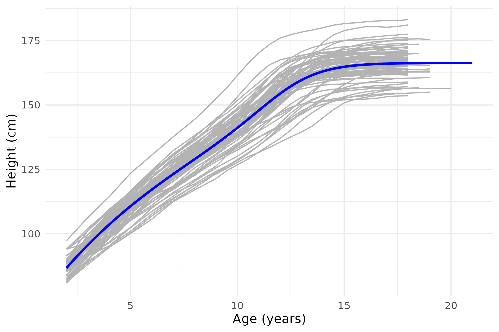
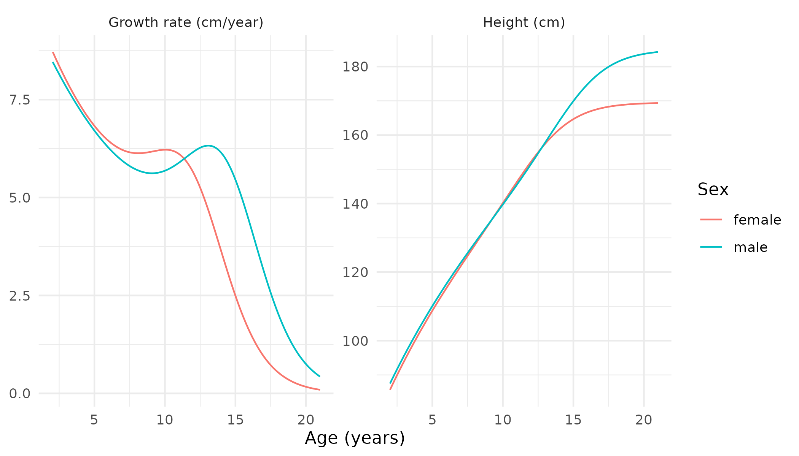

This vignette covers the times at which growth curves reach a level
of their asymptote, timeto(), and the maximum growth rates
and their timing, maxrate(), for the heights of children of
the Berkeley Child Guidance Study. The table of the inflection points
and maximum growth rates of the growth models is in the vignette
Growth models and their parameters.
The Preece-Baines model
The heights of the children of BerkeleyGrowth (see
?BerkeleyGrowth) are not a single sigmoid curve: their
growth slows down through childhood, speeds up in the pubertal growth
spurt, and stops at the adult height. Model 1 of Preece and Baines
(1978) describes this with five parameters,
the adult height , the age in the middle of puberty, the height at that age, and the rates and of growth before and during puberty. The heights were measured from 1.75 years on; the model is fitted from 2 years, first for the girls:
library(gcTMB)
library(ggplot2)
berkeley <- subset(BerkeleyGrowth, Age >= 2 & !is.na(Height))
girls <- subset(berkeley, Sex == "female")
fitg <- gcTMB(Height ~ Age, data = girls, model = "preecebaines")
summary(fitg)
#> Call:
#> gcTMB(form = Height ~ Age, data = girls, model = "preecebaines")
#>
#> Model: preecebaines
#> Family: gaussian, identity link for all parameters
#>
#> Number of observations: 1911
#> Log-likelihood: -6089 (df = 6), AIC: 12190, BIC: 12223
#>
#> Coefficients:
#> Estimate Std. Error t value Pr(>|t|)
#> b1:(Intercept) 1.663e+02 3.242e-01 513.05 <2e-16 ***
#> b2:(Intercept) 1.193e+01 1.068e-01 111.72 <2e-16 ***
#> b3:(Intercept) 1.540e+02 4.734e-01 325.37 <2e-16 ***
#> b4:(Intercept) 1.181e-01 3.554e-03 33.22 <2e-16 ***
#> b5:(Intercept) 8.819e-01 5.776e-02 15.27 <2e-16 ***
#> ---
#> Signif. codes: 0 '***' 0.001 '**' 0.01 '*' 0.05 '.' 0.1 ' ' 1
#>
#> Residual standard deviation: 5.863 on 1906 degrees of freedom
#>
#> Optimiser: relative convergence (4), maximum absolute gradient 6.8e-07
ages <- data.frame(Age = seq(2, 21, by = 0.05))
ggplot(girls, aes(x = Age, y = Height)) +
geom_line(aes(group = ID), colour = "grey70") +
geom_line(data = cbind(ages, Height = predict(fitg, newdata = ages)), colour = "blue", linewidth = 1) +
labs(x = "Age (years)", y = "Height (cm)") +
theme_minimal()
Time to reach a level of the asymptote
timeto() gives the times at which a curve reaches a
percentage of its asymptote, here the ages at which the girls reach 90%,
95% and 99% of their adult height, with standard errors by automatic
differentiation. With type = "absolute", the times at which
the curve reaches given responses, here a height of 150 cm.
tt <- timeto(fitg, level = c(90, 95, 99))
tt
#> Times to reach the percentages of the asymptote:
#>
#> Estimate Std.Error
#> 90% 11.3 0.0627
#> 95% 12.6 0.1002
#> 99% 14.9 0.2183
timeto(fitg, level = 150, type = "absolute")
#> Times to reach the responses:
#>
#> Estimate Std.Error
#> y=150 11.3 0.0439confint() gives Wald intervals by default,
method = "profile" profile likelihood intervals and
method = "boot" parametric bootstrap intervals.
Maximum growth rate
maxrate() gives the time of the maximum growth rate
(tmax), the maximum growth rate there (rate),
and the proportion of total growth at that time,
(fraction). The standard errors are by the delta method.
confint() gives Wald intervals by default;
method = "profile" gives profile likelihood intervals for
tmax and rate, and Wald intervals for
fraction, and method = "boot" bootstrap
intervals as for timeto(). The growth rate of the
Preece-Baines curve is highest in early childhood and falls until the
take-off of the pubertal growth spurt; maxrate() gives the
peak of the spurt, the peak height velocity, and the age at which it is
reached. It is close to, but not the same as, the middle of puberty
.
mr <- maxrate(fitg)
mr
#> Time of the maximum growth rate (tmax), maximum growth rate (rate) and proportion of total growth at inflection (fraction):
#>
#> Estimate Std.Error
#> tmax 10.866 0.19993
#> rate 6.830 0.18381
#> fraction 0.883 0.00762
confint(mr, method = "profile")
#> 2.5 % 97.5 %
#> tmax 10.4171679 11.2174743
#> rate 6.4965849 7.2257125
#> fraction 0.8684475 0.8983488Timing and maximum growth rates of boys and girls
Covariates on all five parameters give a curve for each sex, and
random effects of the children on the adult height, the middle of
puberty and the rate during puberty a curve for each child. The default
starting values are those of the pooled data, with the contrasts of the
girls zero; gcTMBstart() shows them, and start
takes other values, one for each coefficient in this order:
fitre <- gcTMB(Height ~ Age, fform = b1 + b2 + b3 + b4 + b5 ~ Sex, rform = b1 + b2 + b5 ~ 1 | ID,
data = berkeley, model = "preecebaines", control = list(restart = TRUE))
summary(fitre)
#> Call:
#> gcTMB(form = Height ~ Age, fform = b1 + b2 + b3 + b4 + b5 ~ Sex,
#> rform = b1 + b2 + b5 ~ 1 | ID, data = berkeley, model = "preecebaines",
#> control = list(restart = TRUE))
#>
#> Model: preecebaines
#> Family: gaussian, identity link for all parameters
#>
#> Number of observations: 3801, groups: ID 136
#> Log-likelihood: -8820 (df = 17), AIC: 17674, BIC: 17780
#>
#> Coefficients:
#> Estimate Std. Error z value Pr(>|z|)
#> b1:(Intercept) 1.850e+02 3.829e-01 483.094 < 2e-16 ***
#> b1:Sexfemale -1.548e+01 4.962e-01 -31.186 < 2e-16 ***
#> b2:(Intercept) 1.480e+01 2.108e-01 70.203 < 2e-16 ***
#> b2:Sexfemale -2.268e+00 2.958e-01 -7.666 1.77e-14 ***
#> b3:(Intercept) 1.688e+02 2.262e-01 746.169 < 2e-16 ***
#> b3:Sexfemale -1.368e+01 3.335e-01 -41.014 < 2e-16 ***
#> b4:(Intercept) 8.631e-02 9.322e-04 92.585 < 2e-16 ***
#> b4:Sexfemale 1.575e-02 1.584e-03 9.940 < 2e-16 ***
#> b5:(Intercept) 6.079e-01 2.041e-02 29.786 < 2e-16 ***
#> b5:Sexfemale 1.405e-02 2.826e-02 0.497 0.619
#> ---
#> Signif. codes: 0 '***' 0.001 '**' 0.01 '*' 0.05 '.' 0.1 ' ' 1
#> Unadjusted Wald tests; tests of the differences between curves adjusted for their number: partest().
#>
#> Random effects:
#> Groups Name Std.Dev. Corr
#> ID b1 2.20
#> b2 1.65 -0.96
#> b5 0.12 0.43 -0.52
#>
#> Residual standard deviation: 2.087
#>
#> Optimiser: relative convergence (4), maximum absolute gradient 0.028
converged(fitre)
#> [1] TRUEWith 17 parameters and strongly correlated random effects, the fit
needs control = list(restart = TRUE) to converge (see the
overview vignette("gcTMB")).
timeto() and maxrate() with
newdata give the times and rates of the curves of each row,
here the population curves of the sexes
(random = FALSE):
sexes <- data.frame(Sex = c("male", "female"))
timeto(fitre, level = c(90, 99), newdata = sexes, random = FALSE)
#> Times to reach the percentages of the asymptote:
#>
#> Estimate Std.Error
#> 90%:Sex=male 14.4 0.162
#> 90%:Sex=female 12.1 0.150
#> 99%:Sex=male 19.4 0.290
#> 99%:Sex=female 16.9 0.268
maxrate(fitre, newdata = sexes)
#> Time of the maximum growth rate (tmax), maximum growth rate (rate) and proportion of total growth at inflection (fraction):
#>
#> Estimate Std.Error
#> tmax:Sex=male 13.050 0.1991
#> rate:Sex=male 6.326 0.1717
#> fraction:Sex=male 0.855 0.0047
#> tmax:Sex=female 10.019 0.3102
#> rate:Sex=female 6.221 0.1468
#> fraction:Sex=female 0.828 0.0107The girls reach the middle of puberty, the peak of their growth spurt
and their adult height about two years earlier than the boys.
partest() compares a parameter between the rows of
newdata by Wald tests, here the middle of puberty
:
partest(fitre, newdata = sexes, parm = "b2", adjust = "none")
#> Differences to the reference of b2 (location in time):
#>
#> Estimate Std.Error z value p.value lower upper
#> Sex=female - Sex=male -2.27 0.296 -7.67 1.77e-14 -2.85 -1.69
#>
#> Wald z tests; unadjusted p-values and 95% confidence limits.The height and the growth rate of the population curves of the sexes, the growth rate by the differences of the predicted heights:
nd <- merge(sexes, ages)
nd$Height <- predict(fitre, newdata = nd, random = FALSE)
nd$rate <- ave(nd$Height, nd$Sex, FUN = function(h) c(NA, diff(h)) / 0.05)
curves <- rbind(data.frame(nd[, c("Sex", "Age")], value = nd$Height, panel = "Height (cm)"),
data.frame(nd[, c("Sex", "Age")], value = nd$rate, panel = "Growth rate (cm/year)"))
ggplot(curves, aes(x = Age, y = value, colour = Sex)) +
geom_line(na.rm = TRUE) +
facet_wrap(~ panel, scales = "free_y") +
labs(x = "Age (years)", y = NULL, colour = "Sex") +
theme_minimal()
Effects on the maximum growth rate
With b1type = "rate",
is the maximum growth rate of the curve instead of its asymptote (see
The maximum growth rate as a parameter in the vignette
Growth models and their parameters), so that covariates on
are effects on the maximum growth rate. This needs a curve whose maximum
growth rate is proportional to
,
which is not the case for the Preece-Baines curve. The growth spurt
alone, from 8 years on, is a sigmoid curve above the height reached
before it, as the Chapman-Richards curve with the intercept
estimated; with b1type = "rate" and the log link,
is the peak height velocity, and the effect of the sex a ratio of the
rates. Each child has random effects on the peak height velocity, on the
rate
,
which together with the shape
sets the timing of the spurt,
,
and on the height before the spurt. The spurt is close to a Gompertz
curve, the limit of a large shape
,
here about 90; the log link of
and a restart of the optimiser from the estimates
(control = list(restart = TRUE)) let the optimiser converge
there:
spurt <- subset(BerkeleyGrowth, Age >= 8 & !is.na(Height))
fitrr <- gcTMB(Height ~ Age, fform = b1 + b2 + b4 ~ Sex, rform = b1 + b2 + b4 ~ 1 | ID, data = spurt,
model = "chapmanrichards", start = c(b4 = 120), fix = c(b4 = FALSE), b1type = "rate",
link = c(b1 = "log", b3 = "log"), control = list(restart = TRUE))
summary(fitrr)
#> Call:
#> gcTMB(form = Height ~ Age, fform = b1 + b2 + b4 ~ Sex, rform = b1 +
#> b2 + b4 ~ 1 | ID, data = spurt, start = c(b4 = 120), fix = c(b4 = FALSE),
#> model = "chapmanrichards", link = c(b1 = "log", b3 = "log"),
#> b1type = "rate", control = list(restart = TRUE))
#>
#> Model: chapmanrichards; b1 is the maximum growth rate
#> Family: gaussian, log link for b1, log link for b3, identity link for the other parameters
#>
#> Number of observations: 2985, groups: ID 136
#> Log-likelihood: -6298 (df = 14), AIC: 12625, BIC: 12709
#>
#> Coefficients:
#> Estimate Std. Error z value Pr(>|z|)
#> b1:(Intercept) 2.007186 0.014296 140.404 <2e-16 ***
#> b1:Sexfemale -0.002927 0.020022 -0.146 0.884
#> b2:(Intercept) 0.381010 0.005656 67.360 <2e-16 ***
#> b2:Sexfemale 0.072460 0.005456 13.281 <2e-16 ***
#> b3:(Intercept) 4.477681 0.052745 84.893 <2e-16 ***
#> b4:(Intercept) 131.815348 0.598138 220.376 <2e-16 ***
#> b4:Sexfemale -7.368550 0.835741 -8.817 <2e-16 ***
#> ---
#> Signif. codes: 0 '***' 0.001 '**' 0.01 '*' 0.05 '.' 0.1 ' ' 1
#> Unadjusted Wald tests; tests of the differences between curves adjusted for their number: partest().
#> The coefficients of b1, b3 are on the log scale.
#>
#> Random effects:
#> Groups Name Std.Dev. Corr
#> ID b1 0.11
#> b2 0.03 0.78
#> b4 4.57 0.03 -0.17
#>
#> Residual standard deviation: 1.57
#>
#> Optimiser: relative convergence (4), maximum absolute gradient 0.0025
maxrate(fitrr, newdata = sexes)
#> Time of the maximum growth rate (tmax), maximum growth rate (rate) and proportion of total growth at inflection (fraction):
#>
#> Estimate Std.Error
#> tmax:Sex=male 11.752 0.119576
#> rate:Sex=male 7.442 0.106395
#> fraction:Sex=male 0.366 0.000111
#> tmax:Sex=female 9.874 0.088034
#> rate:Sex=female 7.421 0.107250
#> fraction:Sex=female 0.366 0.000111Whether boys and girls have the same peak height velocity is a likelihood ratio test of the models with and without the sex effect on , keeping those on and :
fitrr0 <- gcTMB(Height ~ Age, fform = b2 + b4 ~ Sex, rform = b1 + b2 + b4 ~ 1 | ID, data = spurt,
model = "chapmanrichards", start = c(b4 = 120), fix = c(b4 = FALSE), b1type = "rate",
link = c(b1 = "log", b3 = "log"), control = list(restart = TRUE))
#> Warning in nlminb(start = obj$par, objective = obj$fn, gradient = obj$gr, :
#> NA/NaN function evaluation
anova(fitrr0, fitrr)
#> Likelihood ratio tests of gcTMB models
#>
#> npar AIC BIC logLik deviance LR Df Pr(>LR)
#> fitrr0 13 12623 12701 -6298.3 12597
#> fitrr 14 12625 12709 -6298.3 12597 0.021342 1 0.8839partest() compares the maximum growth rates between the
rows of newdata by Wald tests (see ?partest
for the contrasts and the adjustment for multiple comparisons). With two
sexes there is a single difference, girls against boys, shown here
without adjustment; with the log link, the differences are log ratios of
the rates, and the ratios are given as well.
partest(fitrr, newdata = sexes, adjust = "none")
#> Differences to the reference of b1 (maximum growth rate) on the scale of its log link:
#>
#> Estimate Std.Error z value p.value lower upper ratio
#> Sex=female - Sex=male -0.00293 0.02 -0.146 0.884 -0.0422 0.0363 0.997
#> ratio.lower ratio.upper
#> Sex=female - Sex=male 0.959 1.04
#>
#> Wald z tests; unadjusted p-values and 95% confidence limits, and ratios.predict() with type = "parameters" gives
the asymptote of the population curves as well. For the Chapman-Richards
curve with an intercept, the asymptote is the growth above the intercept
,
here the growth during the spurt above the height before it, about 50
cm, so that the adult height is
plus the asymptote:
pars <- predict(fitrr, newdata = sexes, type = "parameters", random = FALSE)
data.frame(Sex = sexes$Sex, peak_rate = pars[, "b1"], height_before_spurt = pars[, "b4"],
growth_in_spurt = pars[, "asymptote"], adult_height = pars[, "b4"] + pars[, "asymptote"])
#> Sex peak_rate height_before_spurt growth_in_spurt adult_height
#> 1 male 7.442348 131.8153 52.79488 184.6102
#> 2 female 7.420599 124.4468 44.22911 168.6759The adult heights agree with the asymptotes of the Preece-Baines curves of the sexes above.